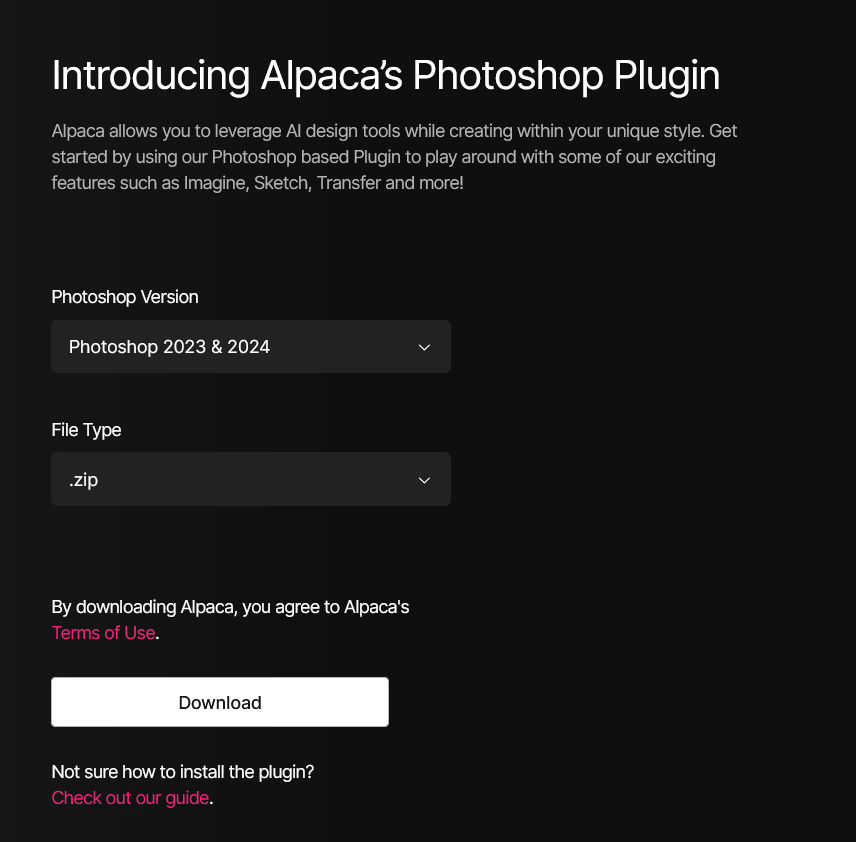
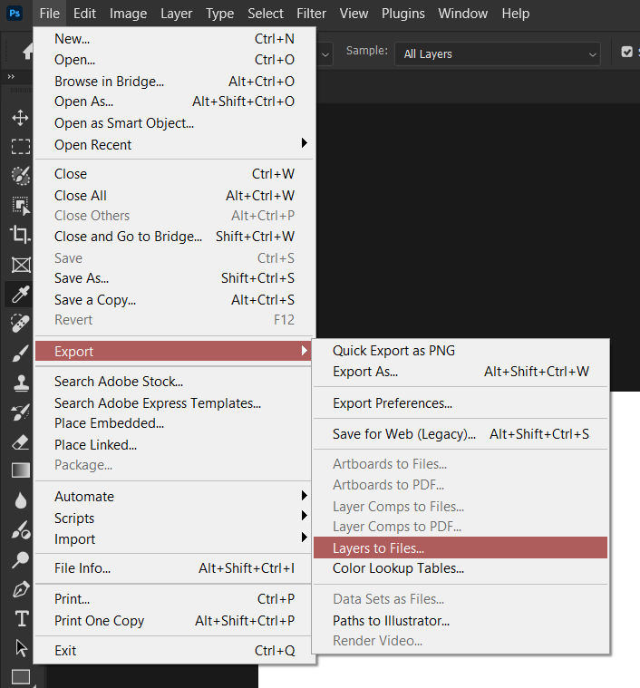

Данный раздел находится в активной разработке, поэтому некоторые пункты могут быть
пропущены или недописаны до окончательных изменений.
Полезные материалы
Где скачать шаблоны, программы для творчества, а также плагины к ним?
На
главной странице
в разделе "Ресурсы" и в закрепленном сообщении в
AEChat
вы всегда можете найти наши каналы для шаблонов и программ. Например, в
Design World
можно найти различные текстуры, кисти, паттерны и многое другое для Photoshop и
Illustrator с помощью соответствующих хештегов: с соответствующих хештегов:
#текстуры #кисти
#паттерны. А в
складе стройматериалов
вы можете найти скачать программы для творчества или различные плагины для
Windows, например:
#premierepro #photoshop
#illustrator или #borisfx.
Программы для творчества, но для macOS, можно найти в
Яблоневом саду.
Не нашёл нужный шаблон, но у меня есть на него ссылка. Как мне его получить?
Файлы из Videohive, Shutter Stock ботом не принимаются по причине того, что
файлы, находящиеся на этих сервисах, не распространяются подписочным методом.
Где скачать Photoshop с рабочим Firefly?
Нигде, Adobe прикрыл эту функцию ещё с сентября 2023 года на "народных" версиях.
Пожалуйста, перестаньте об этом спрашивать.
Если вы ищете чем его заменить, могу порекомендовать плагин
Alpaca ML, скачать его вы можете после регистрации на сайте. В бесплатном тарифе вы
можете сделать 100 генераций в день, но сервис может взять ваши изображения для
тренировки своих моделей. Платная версия лишена этих недостатков.
Прежде чем скачивать плагин, выберите версию вашего Photoshop и тип файла
.zip, так как у нас при всём желании будет
отсутствовать Creative Cloud.

Скачивание Alpaca ML
После скачивания откройте архив и распакуйте папку
alpaca-x_y_z в
C:\Program Files\Adobe\Adobe Photoshop 20XX\Plug-ins.
Затем откройте Photoshop, перейдите в
Подключаемые модули и выберите нужный нам плагин.
Открытие плагина Alpaca ML
В открытой панели плагина вам предлагают авторизоваться. Нажмите на
Log In и продолжите авторизацию в браузере. После
авторизации вам будут доступны все функции сервиса Alpaca ML, в том числе и
местная "генеративная заливка". Работает далеко не идеальным образом, но в
качестве аналога - самое оно.
Пример работы Alpaca ML в PhotoshopКак найти шрифт по фото?
Вы можете использовать сервисом
LikeFont
для определения шрифта по фотографии. Этот сервис способен распознавать шрифты
как на латинице, так и на кириллице. Как начать им пользоваться? Просто зайдите
на сайт и загрузите своё изображение с помощью проводника или
Ctrl + V
Главная страница LikeFont
Учтите, что по умолчанию на странице стоит галка на
I agree to post it in Identification Community, которая
выкладывает ваш скриншот на общее обозрение. Уберите галочку, если вы не
хотите выкладывать скриншот.
Предположим, что на вход мы дали определённый скриншот. Но вот незадача: он
неконтрастный и весь контент сливается. Что же делать?
Пример плохого исходника
Для этого нужно обработать изображения. Необязательно лезть в Photoshop и что-то
там делать, ведь на сайте уже есть инструменты для обработки изображения,
например Threshold. Мы его повышаем до максимально
возможного значения, чтобы текст стал более читабельным. Также есть инструменты
для поворота, отзеркаливания и наклона изображения.
Изображение после обработки средствами сайта
Как мы видим, Threshold помог, но не сильно, так как фрактальный шум по яркости
совпал с яркостью текста. Но не унываем, у нас есть как минимум три чистых
буквы. После обработки пролистываем страницу ниже и мы видим несколько
изображений к которым нужно вписать букву.
Если на изображении нет буквы или символа, то такие ячейки можно пропустить
Чем больше вы впишете букв, тем лучше будет результат распознавания шрифта!
После того как вы вписали буквы, нажмите на
Identify Now и сервис начнёт распознавать шрифт, а затем
выдаст результат.
Результат распознавания шрифта
В моём примере был использован шрифт Broadway и с его
нахождением сервис справился прекрасно.
Как узнать об официальных нововведениях и багах в Photoshop?
Почему у меня цвета в Photoshop отличаются от тех, что в просмотрщике фото?
Скорее всего это связано с разными цветовыми профилями у исходника и в
программе. Для начала узнайте в каком цветовом профиле было сохранено фото, а
затем укажите его в Photoshop.
Как мне правильно работать с RAW файлами?
Зачем люди советуют поменять язык в Photoshop на английский и как это сделать?
В редких случаях, а также при использовании сторонних расширений и плагинов, вы
можете столкнуться с различными багами и приколами при использовании программы
на русском языке. Например, некоторые Actions могут быть
жёстко завязаны на английском интерфейсе и не могут работать корректно с другими
локализациями.
Если вы используете лицензионную версию Photoshop, то
возможно инструкция ниже будет неактуальна для вас. Вам нужно сменить язык
программы в Creative Cloud самостоятельно.
Смена языка в Photoshop гораздо проще, чем в
After Effects и Premiere Pro.
Вам нужно открыть пункт
Редактирование > Настройки > Интерфейс и в разделе
Презентация указать язык, который вы хотите
использовать. В нашем случае - английский.
Смена языка в Photoshop
После этого перезагрузите программу и программа в дальнейшем будет запускаться с
английским интерфейсом.
Как сохранить слои отдельными файлами?
Чтобы сохранить слои в вашем .psd отдельными файлами,
вам нужно перейти в File > Export > Layers to Files. Затем укажите в
открывшемся окне формат файла и путь к папке, в которой вы хотите сохранить
слои.

Экспорт слоёв в файлыКак делать анимации в Photoshop?
Как изменить акцентный цвет интерфейса?
Частые ошибки
Рабочий диск заполнен или Scratch Disk Full
Убедитесь в том, что диск, который указан в настройках программы, имеет
свободное пространство. Какой диск у вас установлен в качестве рабочего, вы
можете узнать в Edit > Preferences > Scratch Disk.
Если у вас есть место на другом диске - вы можете назначить его в качестве
рабочего.
Настройка рабочих дисков
Рабочий диск - накопитель, который используется для хранения временных файлов.
Photoshop обычно использует рабочие диски для хранения фрагментов и истории
изменения документов. По умолчанию Photoshop использует
в качестве основного рабочего диска жесткий диск, на который установлена
операционная система.
"Для доступа к функциям на базе технологии Firefly в приложениях Adobe у вас
должны быть установлены подлинные приложения Adobe" или "Проверьте своё
подключение к интернету и повторите попытку".
Вы не можете использовать Adobe Firefly на нелегальных
версиях. Чтобы его использовать - придётся оформить подписку на
Creative Cloud.
"Приложение Adobe Creative Cloud, необходимое для устранения проблемы
отсутствует или повреждено..."?
В вашей системе остались хвосты от предыдущих установок
Adobe, в том числе и от установок приложения
Creative Cloud. Для этого очистите лишнее с помощью
Adobe Creative Cloud Cleaner.
Проблемы с установкой
Что делать, если файлы разбиты на .part1, .part2 и так
далее?
Эти файлы были специально разделены для обхода ограничений Telegram по размеру
загружаемых файлов, все части нужно скачать на компьютер. Для корректной
распаковки многотомных архивов воспользуйтесь
WinRAR
для Windows или
keka
для macOS.
Если в архиве присутствует исполняемый файл .exe, то
достаточно его запустить и WinRAR автоматически
распакует все файлы.
В архив забыли положить инструкцию для установки, как что устанавливать?
В большинстве случаев процедура установки плагинов или шаблонов универсальна,
просто следуйте рекомендациям ниже:
Если в архиве находится файл .atn, то для установки
вам нужно открыть окно Actions с помощью
Alt + F9 и нажать три полоски в углу открывшегося окна.
Затем нужно выбрать пункт Load Actions и выбрать нужный
файл.
Установка Actions в Photoshop
Если в архиве находится файл .abr, то для установки
вам нужно открыть окно кистей с помощью
Window > Brushes, а затем нажать три полоски в углу
открывшегося окна. Затем нужно выбрать пункт
Import Brushes и выбрать нужный файл кистей.
Импорт кистей в Photoshop
Если в архиве находится файл .psd, то такие файлы
открываются как обычный файл Photoshop. Их также можно импортировать в уже
существующий проект с помощью Ctrl + I.
This unlicensed Adobe app has been disabled
Одна из программ Adobe, установленная на вашем ПК,
решила залезть в сеть. Заблокируйте программе доступ в интернет через
брандмауэр или Netlimiter,
переустановите репак или внесите строки низе в hosts файл, который расположен в
C:\Windows\System32\drivers\etc\hosts. Иногда такое
появляется, когда вы включаете VPN на вашем ПК, который
игнорирует правила в hosts и позволяет программам от Adobe выходить в интернет.
Если вы действительно используете VPN, то отключите его
на время использования.
Нажмите на блок с текстом, чтобы скопировать в буфер обмена.
У вас было криво установлено приложение
Creative Cloud до установки репака. Вы можете его
удалить с помощью официального инструмента для удаления
Adobe Creative Cloud Cleaner
или попробуйте вручную удалить папку
C:\Program Files (x86)\Common Files\Adobe, а затем
повторить установку.
Код ошибки 21 при установке Adobe или "операционная система не соответствует
минимальным требованиям для этой программы установки"
Такое происходит, если вы пытаетесь установить программы от
Adobe 2024 года и выше на
Windows 10 21H2 или старше. Для решения этой проблемы
обновите вашу систему до 22H2 или до
Windows 11. Текущую сборку Windows вы можете
посмотреть через winver, открыв его с помощью
Win + R.
Про сохранение
Какие настройки лучше ставить для сохранения в социальные сети?
Как вернуть старый механизм сохранения файлов?
Adobe в версии Photoshop 22.4.2 решила немного изменить
окна Save As и Export As и
некоторым пользователям это не понравилось, так как в новом меню были не все
форматы сохранения и пользователям приходилось пользоваться опцией
Save As Copy. К счастью компания предусмотрела такое,
поэтому добавила в настройках возвращение старого процесса сохранения. А после -
добавила остальные форматы и в более новых версиях программы, поэтому смысл от
этой функции постепенно пропадает. Подробно о командах сохранения вы можете
прочитать на
сайте Adobe.
Для возвращения старого механизма сохранения файлов, вам нужно нажать на
комбинацию клавиш Ctrl + K для открытия настроек и
перейти во вкладку File Handling. Затем выберите пункт
Enable Legacy "Save As" и
Do not append "copy" to filename when saving a copy,
чтобы не добавлять слово copy к имени файла.
Включение устаревшего механизма сохранения файлов в Photoshop
Дополнительно вы можете перейти во вкладку Export и
выбрать там Use Legacy "Export As".
Использование устаревшего механизма экспорта в Photoshop
Как сохранить последовательность фото в .gif?